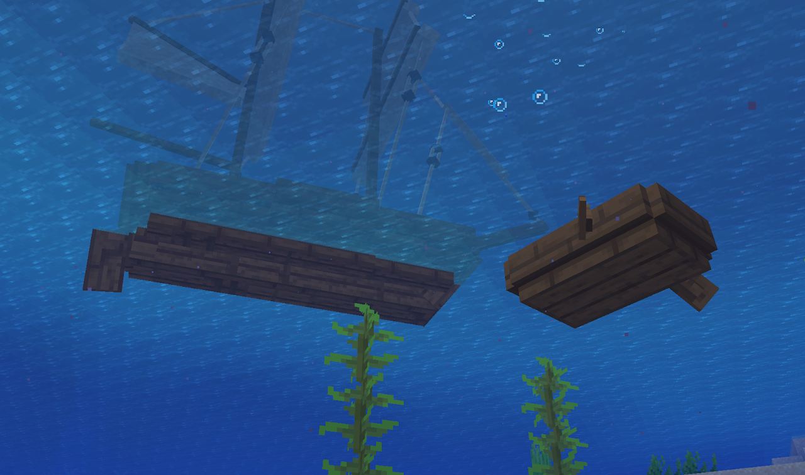
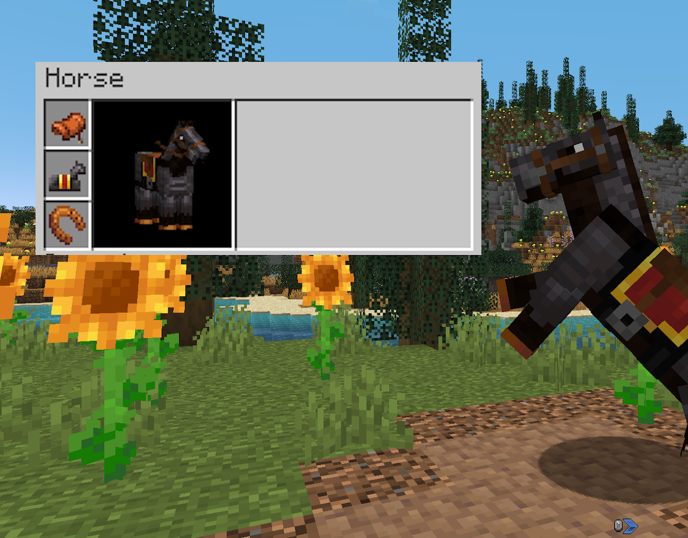
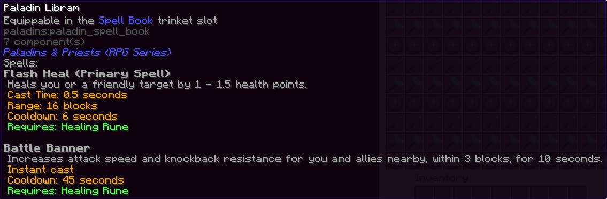

Welcome to the Guide
Heres an sneak peak into some of the new and important bits of information you should look out for!

Unseaworthy
Normal boats will no longer work in any location deeper than a river! To combat this change you will want to use a larger vessel like a Drakkar or a Brigg!
Progression Changes
Progression has been tweaked to be slightly slower.
Lava is now used to make most iron items, diamond armor now requires its iron counterparts, and more!
There is much more than is listed here though, so be sure to have EMI installed!


Horse Buffs
Horses have received many buffs, including some new items!
They can now be upgraded to Netherite armor, trimmed, equipped with powerful horseshoes, and much more!
The Illagers are back with an overhaul!
Getting totems, fighting raids, or concurring Woodland Mansions will no longer be such an easy feat with these foes on the rise.
In total there are Twelve new Illagers, all with a unique role, mostly appearing in raids!
Rumor has it there is even a new boss to defeat in the woodland mansion...
Illagers and Pillagers!

Introduction into classes
There are now spell books you can equip to fit your fighting style!
These books are not mandatory, and can be switched out at any time (while off-cooldown).
There are five unique classes in total, all with their own pair of skills!




Enchanting Overhaul
Enchanting has received major changes, additions, and removals!
The Wandering Trader is now required to craft the enchantment table.
Bookshelves can take place form further away and go through some blocks, allowing for better decoration!
Sharpness, Fire Aspect, Protection, and other tedious or daunting enchantments have been removed and replaced with new ones!
Finally, the Enchanting Workstation! This powerful block acts like a child between the enchantment table and an anvil, being able to combine, split, extract, and even upgrade enchantment books!

Backslots, Rolling, Reviving and More!
Combat has had a few tweak and additions to spice up the season! The changes will affect PvP and PvE, and will make your life a little more challenging, but also very rewarding.
Reviving
Players can now be revived when slain! When you die you will have 90 seconds to be saved by another player, if your timer runs out before someone can rescue you then you will die!


Dying too many times within a short period of time (2 within 40 seconds) then you will instantly die with no timer given, you will also instantly die if you are exploded or die tofire!
When you are revived you will receive weakness and hunger, and will be set to half a heart.
Rolling
You can now use a quick dash to avoid an attack or mess with an enemy, this dash is indicated by a blue arrow near your hotbar, and can be moved to your liking.

Backslot
You now have an extra slot you can easily switch to! This item slot is accessed with a keybind, and can be a quick way to switch to a special item when in need.
PVE
Mobs have gained some new abilities; Zombies now dash, skeletons run, the Wither is revamped, and more! Mobs have not received any sort of base health upgrade though, just some new tricks up their sleeves to complement the new structures you'll f ight them in.
Villager Cycling
Villagers will now periodically swap to new trades, meaning having large slave halls with each possible book is no longer a viable stratgey. You can still re-roll villagers manually, but it is a much smarter idea to just let them roam free with each other and access all trades at once with a "Trading Post", a block that allows you to access all villager trades nearby you in one spot!

Removed Items
Many items have been removed for the sake of balancing and theming (mainly balancing).
Enderpearls: Enderpearls may still be obtained, but are now purely for crafting and are impossible to throw.
Strength and Speed: These potions were removed to allow fighting to focus more on other things, and to ease balancing to be more fair/less grindy.
Protection, Power, and Sharpness: All of these enchantments, as well as any fire-inflicting enchantments have been removed and replaced with new ones! Giant villager halls are no longer needed to be up to speed with everyone else.